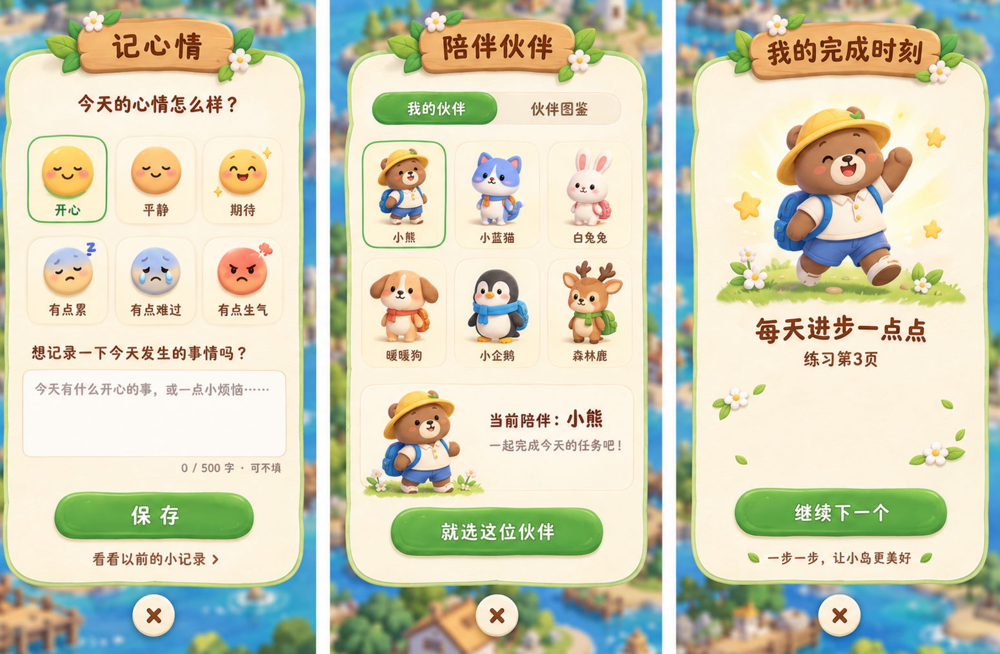
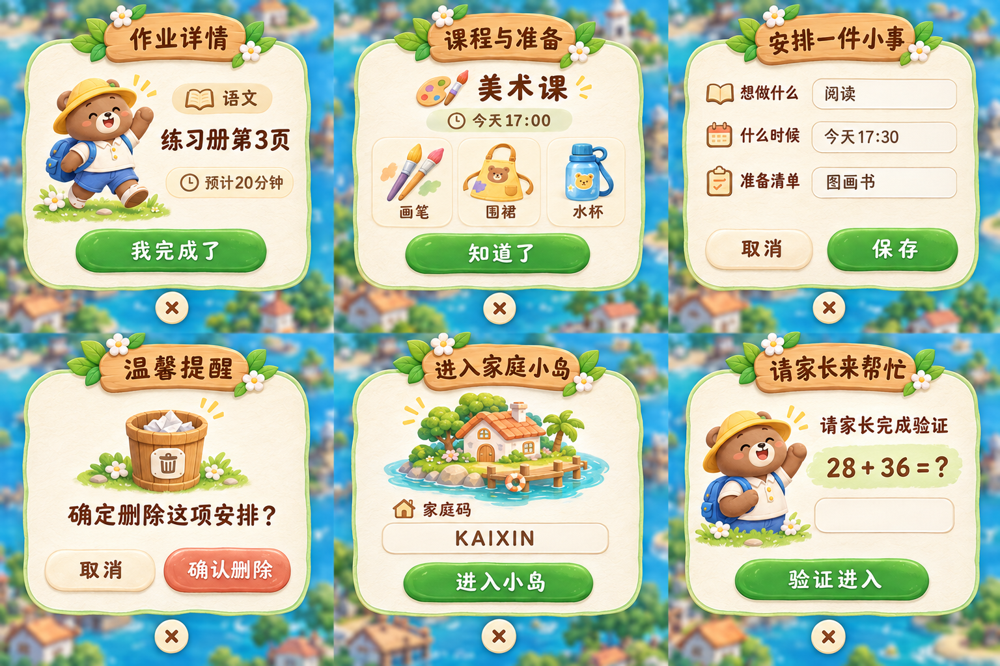

<!doctype html><html lang="zh-CN"><meta charset="utf-8"><meta name="viewport" content="width=device-width,initial-scale=1"><title>开心岛 · 原稿还原版</title><style>*{box-sizing:border-box}body{margin:0;background:#f7f3e8;color:#64442e;font:16px/1.6 system-ui}header,main{max-width:1450px;margin:auto;padding:24px}h1{font-size:26px;margin:0}p{color:#89735c}nav{display:flex;gap:12px;flex-wrap:wrap;margin:20px 0}button,a{font:inherit;color:inherit}button{padding:10px 20px;border:1px solid #cdbb97;border-radius:25px;background:#fffaf0;cursor:pointer}button[aria-pressed=true]{background:#628a43;color:white}img{display:block;width:100%;height:auto;border-radius:12px}figure{margin:0}figcaption{padding:12px 0}a{display:inline-block;margin:10px 12px 0 0}[hidden]{display:none}</style><header><h1>开心岛 · 原稿还原版</h1><p>按原参考图恢复手绘纹理与组件比例。此页展示视觉设计图，实际页面尚未替换。</p><nav><button aria-pressed="true" data-target="core">核心三屏</button><button aria-pressed="false" data-target="extension">其他弹窗</button><button aria-pressed="false" data-target="reference">原始参考图</button></nav></header><main><figure id="core"><figcaption>核心三屏：保留原稿布局；完成页移除积分与建设力信息。</figcaption><a href="core-dialogs.png" target="_blank">查看原尺寸</a></figure><figure id="extension" hidden><figcaption>六个扩展场景沿用同一套木牌、纸面、花叶和按钮视觉。</figcaption><a href="extended-dialogs.png" target="_blank">查看原尺寸</a></figure><figure id="reference" hidden><figcaption>原始参考图，仅用于对照；其中积分与建设力信息已作废。</figcaption></figure></main><script>document.querySelectorAll('nav button').forEach(b=>b.onclick=()=>{document.querySelectorAll('nav button').forEach(x=>x.setAttribute('aria-pressed',x===b));document.querySelectorAll('figure').forEach(f=>f.hidden=f.id!==b.dataset.target)});</script></html>
